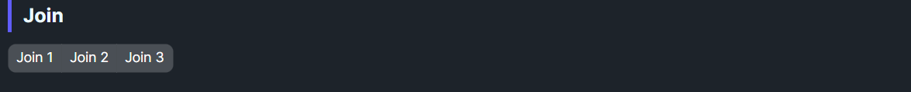

DaisyJoin
Overview

DaisyJoin groups adjacent controls into a seamless, connected set by trimming internal corners and overlapping borders. It works horizontally by default and supports vertical orientation. Ideal for segmented buttons, grouped inputs, pagination, or stacked radio/button groups.
Properties
| Property |
Type |
Default |
Description |
Orientation |
Orientation |
Horizontal |
Layout direction. Set to Vertical to stack items. |
ActiveIndex |
int |
-1 |
Index of the active/selected item (0-based). When set, applies ActiveBackground and ActiveForeground to that item. Set to -1 for no selection. |
ActiveBackground |
Brush |
DaisyPrimaryBrush |
Background brush applied to the active item. |
ActiveForeground |
Brush |
DaisyPrimaryContentBrush |
Foreground brush applied to the active item. |
Methods
| Method |
Description |
RefreshItems() |
Re-collects children and re-applies join styling. Call this after dynamically adding or removing children. |
Supported Control Types
DaisyJoin applies corner radius adjustments only to these specific control types:
| Control Type |
Notes |
Button |
Including DaisyButton. DaisyButtons with Default/Soft styles get visible borders added. |
ToggleButton |
Including derived types like DaisySwap. |
TextBox |
Including DaisyInput. |
ComboBox |
Including DaisySelect. |
Border |
Useful for wrapping other content. |
NOTE
Other control types will be positioned correctly (margins applied) but won't have their corner radius adjusted.
Behavior & Styling
| Feature |
Description |
| CornerRadius |
First/last children keep outer rounding (8px); middle items have square corners (0px). |
| Margins |
Negative margins (-1px) collapse borders between items, avoiding double-thick dividers. |
| Active highlight |
When ActiveIndex >= 0, the item at that index receives ActiveBackground/ActiveForeground while others get Base200/BaseContent colors. |
Quick Examples
<!-- Segmented buttons -->
<daisy:DaisyJoin>
<daisy:DaisyButton Content="Left" />
<daisy:DaisyButton Content="Middle" />
<daisy:DaisyButton Content="Right" />
</daisy:DaisyJoin>
<!-- Input with dropdown and action button -->
<daisy:DaisyJoin>
<daisy:DaisyInput Watermark="Search" />
<daisy:DaisySelect PlaceholderText="All">
<ComboBoxItem>All</ComboBoxItem>
<ComboBoxItem>Posts</ComboBoxItem>
</daisy:DaisySelect>
<daisy:DaisyButton Content="Go" Variant="Primary" />
</daisy:DaisyJoin>
<!-- Vertical join -->
<daisy:DaisyJoin Orientation="Vertical">
<daisy:DaisyButton Content="Top" />
<daisy:DaisyButton Content="Middle" />
<daisy:DaisyButton Content="Bottom" />
</daisy:DaisyJoin>
<!-- Join with active selection (e.g., for tabs or pagination) -->
<daisy:DaisyJoin ActiveIndex="1">
<daisy:DaisyButton Content="Tab 1" />
<daisy:DaisyButton Content="Tab 2" /> <!-- This will be highlighted -->
<daisy:DaisyButton Content="Tab 3" />
</daisy:DaisyJoin>
<!-- Custom active colors -->
<daisy:DaisyJoin ActiveIndex="0"
ActiveBackground="{DynamicResource DaisySuccessBrush}"
ActiveForeground="{DynamicResource DaisySuccessContentBrush}">
<daisy:DaisyButton Content="Option A" />
<daisy:DaisyButton Content="Option B" />
</daisy:DaisyJoin>
Tips & Best Practices
- Ensure children use consistent heights/paddings for a clean seam.
- Place semantic variants on endpoints to emphasize actions (e.g., Primary on the rightmost button).
- For form combos (input + button), keep the input first so borders align naturally.
- When stacking vertically, use equal widths to avoid staggered edges.
- Use
ActiveIndex for pagination, tabs, or any segmented control that needs selection state.
- Call
RefreshItems() after dynamically modifying children at runtime.
- Wrap unsupported controls in a
Border if you need join styling on them.